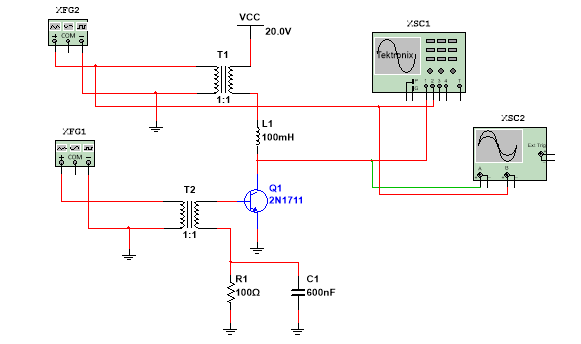
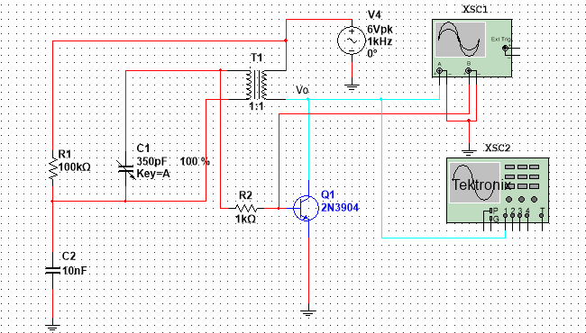
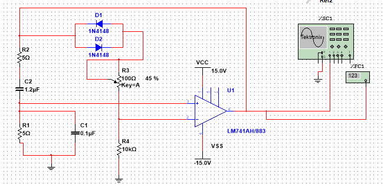
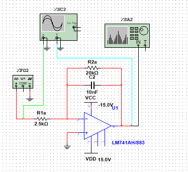
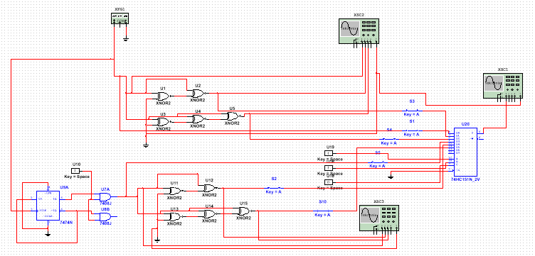

Universidad Tecnica de Ambato
Comunicación Analógica
Practicas
Modulador Colector
La configuración utilizada mas comúnmente es cátodo o reja común. Si se utiliza la configuración reja común, la señal ingresa por el cátodo y sale por la placa, esto significa que la capacidad salida-entrada será la capacidad placa-cátodo, al tener un electrodo entre ellos (reja control) este hace de pantalla y disminuye la capacidad. Por lo que en la configuración reja común se lo puede utilizar al triodo en alta frecuencia y alta potencia. Otra alternativa para disminuir la capacidad entrada-salida (entre reja y placa), es agregar un electrodo entre medio, este electrodo hace de pantalla y divide la capacidad entrada-salida, a este electrodo que se le agrega se lo llama Reja pantalla, a esta nueva válvula se la llama Tetrodo.
Descargar la simulacion
Polarizado colector

Polarizar un transistor consiste en suministrar las tensiones adecuadas y conectar las resistencias oportunas para que el transistor funcione dentro de los límites indicados en el diseño, de forma que la señal aplicada a la entrada no resulte deformada a la salida.
Si mediante dos baterías aplicamos unas tensiones positivas según se observa en el gráfico inferior (es decir la base positiva respecto al emisor y el colector positivo respecto a la base) de un transistor NPN, el diodo PN formado por la base y el emisor estará polarizado directamente, produciendo una corriente base-emisor, mientras que la unión base-colector queda polarizada inversamente.
Si mediante dos baterías aplicamos unas tensiones positivas según se observa en el gráfico inferior (es decir la base positiva respecto al emisor y el colector positivo respecto a la base) de un transistor NPN, el diodo PN formado por la base y el emisor estará polarizado directamente, produciendo una corriente base-emisor, mientras que la unión base-colector queda polarizada inversamente.
Descargar la simulacion
Oscilador Hartley

El oscilador Hartley es un circuito electrónico de alta frecuencia basado en un oscilador LC. Fue creado por el inventor estadounidense Ralph Vinton Lyon Hartley y patentado en 1920.
Oscilador Hartley es un tipo de armónico oscilador que fue inventado por Ralph Hartley en 1915. Estos son los osciladores de circuito sintonizado que se utilizan para producir las ondas en el rango de la radiofrecuencia y por lo tanto también se conocen como osciladores de RF. Su frecuencia de oscilación se decide por su circuito tanque que tiene un condensador conectado en paralelo con los dos conectados en serie
Oscilador Hartley es un tipo de armónico oscilador que fue inventado por Ralph Hartley en 1915. Estos son los osciladores de circuito sintonizado que se utilizan para producir las ondas en el rango de la radiofrecuencia y por lo tanto también se conocen como osciladores de RF. Su frecuencia de oscilación se decide por su circuito tanque que tiene un condensador conectado en paralelo con los dos conectados en serie
Descargar la simulacion
Oscilador de Wein

El oscilador puente de Wien tiene dos partes principales, un filtro pasa banda que se encarga de generar la oscilación a una frecuencia igual a su frecuencia central, y un amplificador no inversor que mantiene la ganancia del oscilador en uno. El filtro pasa banda tiene como entrada la salida del amplificador operacional vo, y su salida vx se realimenta al pin no inversor del mismo amplificador. En vista que la salida del filtro está atenuada ya que es un filtro pasivo, con las resistencias RF y R1 se realiza el ajuste para que la ganancia A sea la unidad. Entonces primero se realizará el análisis del filtro pasa banda.El oscilador en puente Wien se trata de un oscilador RC cuya aplicación más conocida es la medición de impedancias.
Descargar la simulacion
Diferenciador e Integrador

Los circuitos integradores son básicamente amplificadores operacionales inversores (funcionan en configuración de amplificador operacional inverso, con condensadores y resistencias adecuados), que generalmente producen una salida de onda triangular a partir de una entrada de onda cuadrada. Por lo tanto, también se utilizan para crear pulsos triangulares.
La corriente en la ruta de retroalimentación está involucrada en la carga y descarga del capacitor; por lo tanto, la magnitud de la señal de salida depende de la cantidad de tiempo que un voltaje está presente (aplicado) en el terminal de entrada del circuito.
La corriente en la ruta de retroalimentación está involucrada en la carga y descarga del capacitor; por lo tanto, la magnitud de la señal de salida depende de la cantidad de tiempo que un voltaje está presente (aplicado) en el terminal de entrada del circuito.
Descargar la simulacion
Sintetizador

El sintetizador representa un salto sin precedentes en la historia de la música. Hasta su aparición, el medio estaba dominado por las capacidades acústicas de la madera y las cuerdas. No obstante, las limitaciones de los instrumentos tradicionales desaparecieron completamente con la llegada del sintetizador.
La importancia de este amigo con teclas y muchísima tecnología, se deriva de la versatilidad inherente que lo convierte en la herramienta perfecta e indispensable para los estudios de grabación. Y aunque domarlo requiere un profundo estudio y pasión por la música, bien se merece cada segundo invertido en él.
Es por ello que nos dedicaremos a describir este instrumento con el mayor detalle, para que tú puedas conocerlo mejor aquí, en culturasonora.
La importancia de este amigo con teclas y muchísima tecnología, se deriva de la versatilidad inherente que lo convierte en la herramienta perfecta e indispensable para los estudios de grabación. Y aunque domarlo requiere un profundo estudio y pasión por la música, bien se merece cada segundo invertido en él.
Es por ello que nos dedicaremos a describir este instrumento con el mayor detalle, para que tú puedas conocerlo mejor aquí, en culturasonora.
Descargar la simulacion
Siguenos en nuestras paginas o contactanos

Integrantes:
• Bryan de la Cruz
• Josué Balseca
• Ronnie Cuji
• Cristian Chimba
• Jhon Toapanta
• Josué Balseca
• Ronnie Cuji
• Cristian Chimba
• Jhon Toapanta
Docente:
• Ing. juan Pablo Pallo